Fundamentos Históricos y Jurídicos
La soberanía argentina sobre las Islas Malvinas, Georgias del Sur y Sandwich del Sur.
1825: El Tratado de Amistad y el Reconocimiento Británico
El 2 de febrero de 1825, Gran Bretaña y las Provincias Unidas del Río de la Plata firmaron el Tratado de Amistad, Comercio y Navegación.
A través de este instrumento diplomático histórico, las Provincias Unidas eran oficialmente reconocidas como una Nación independiente del Reino de España por parte de la potencia mundial.
El tratado establecía una recíproca libertad de comercio, disminución de los derechos de importación, eximición de tasas portuarias para ambas partes y garantizaba libertad de conciencia para los súbditos ingleses que residían en nuestro territorio.
Además, Gran Bretaña aceptó formalmente la prohibición de pescar y cazar en nuestras aguas jurisdiccionales y no objetó la soberanía argentina en las Islas Malvinas.
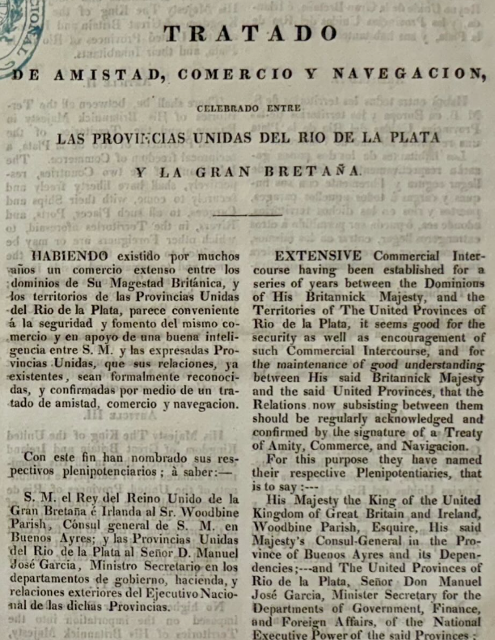
1833: La Usurpación del Territorio
Pese a que el Tratado de 1825 estaba en plena vigencia, las fuerzas británicas usurparon las Islas Malvinas el 3 de enero de 1833. Este territorio por el Tratado de Tordesillas correspondía originalmente al Reino de España y luego, al ser reconocida nuestra independencia, pasó legítimamente a pertenecer a las Provincias Unidas del Río de la Plata y ser ocupado de facto por el gobierno argentino.
La usurpación expulsó por la fuerza a las autoridades legítimas, rompiendo los principios de respeto territorial y desatando una disputa de soberanía que hunde sus raíces en el nacimiento de nuestra patria.
Hoy en día, y tal como lo establece la Cláusula Transitoria Primera de la Constitución Nacional, la recuperación de estos territorios y el ejercicio pleno de la soberanía –respetando el modo de vida de sus habitantes y el derecho internacional– constituyen un objetivo permanente e irrenunciable del pueblo argentino.
1965: El Consenso Global y Respaldo Diplomático
El reclamo argentino cuenta con un sólido y constante respaldo internacional. La Resolución 2065 (XX) de la Asamblea General de las Naciones Unidas (1965) es la piedra angular, encuadrando el caso como una situación colonial que debe resolverse mediante negociaciones bilaterales.
La comunidad internacional comprende que en las Islas Malvinas no aplica el principio de libre autodeterminación, ya que la población británica actual es una población trasplantada por la potencia ocupante tras el desalojo argentino en 1833. El principio rector es, en cambio, el de la Integridad Territorial de la Nación Argentina.
Este mandato es ratificado anualmente por la ONU e incontables foros internacionales (OEA, MERCOSUR, CELAC), rechazando además las actividades unilaterales británicas de exploración de los recursos nacionales.
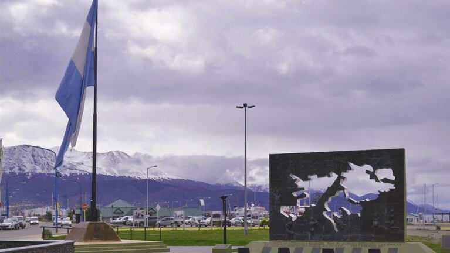
Monumento a los Héroes de Malvinas en la ciudad de Ushuaia.
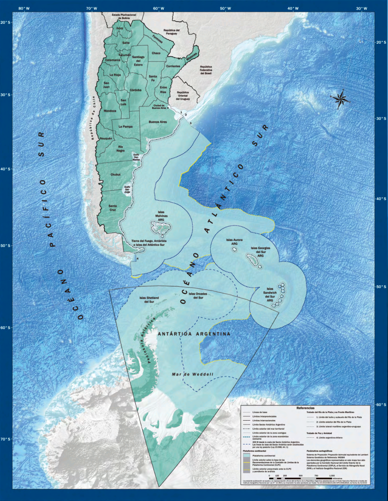
Proyección Antártica: Georgias y Sandwich del Sur
El conflicto y el reclamo soberano no se limitan a las Islas Malvinas. Las Islas Georgias del Sur y Sandwich del Sur, junto con los espacios marítimos circundantes, son parte indivisible del territorio nacional argentino.
Su importancia radica no solo en sus vastos recursos naturales, sino en su posición geoestratégica como puerta de acceso natural a la Antártida. La presencia militar foránea en el Atlántico Sur amenaza la seguridad regional y contradice explícitamente la resolución que declara a esta área como Zona de Paz y Cooperación (ZPCAS).
Guerra del Atlántico Sur: 1982
Llegada la década de 1980, y con 149 años de dominación británica interrumpiendo nuestra soberanía sobre el archipiélago, el gobierno de facto argentino decidió promover un plan militar de recuperación territorial.
"El 2 de abril de 1982, las fuerzas armadas de Argentina desembarcaron en las Islas Malvinas, dando inicio al conflicto bélico para restituir el ejercicio de la soberanía nacional."
Operación Rosario: Las primeras horas de abril
En las horas previas al desembarco del 2 de abril, la flota argentina navegaba con una misión clara: recuperar las Islas bajo el estricto principio fundamental de no producir bajas en las filas enemigas ni en los habitantes civiles. El fin estratégico consistía en forzar a Gran Bretaña a sentarse a discutir el restablecimiento de las negociaciones diplomáticas de soberanía.
Los focos de acción principal estaban marcados: el acuartelamiento de los Royal Marines radicado en Moody Brook y la sede del gobernador. La maniobra no buscaba entablar un choque prolongado, sino asestar un golpe de efecto relámpago que paralizara toda pretensión británica de prolongar una defensa estéril y propiciara una claudicación pacífica.
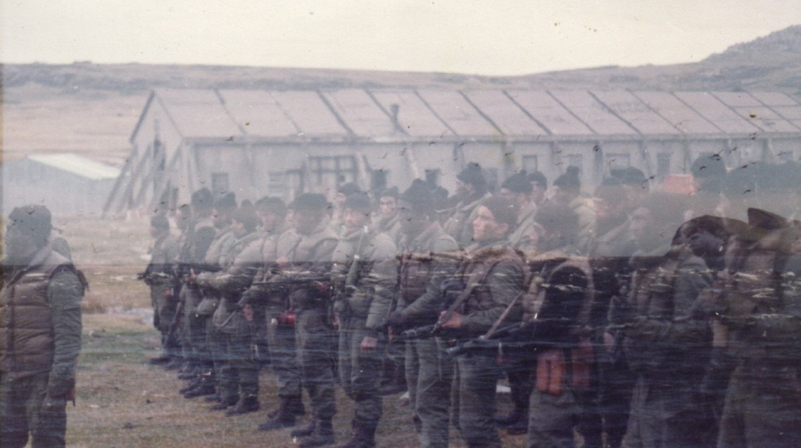
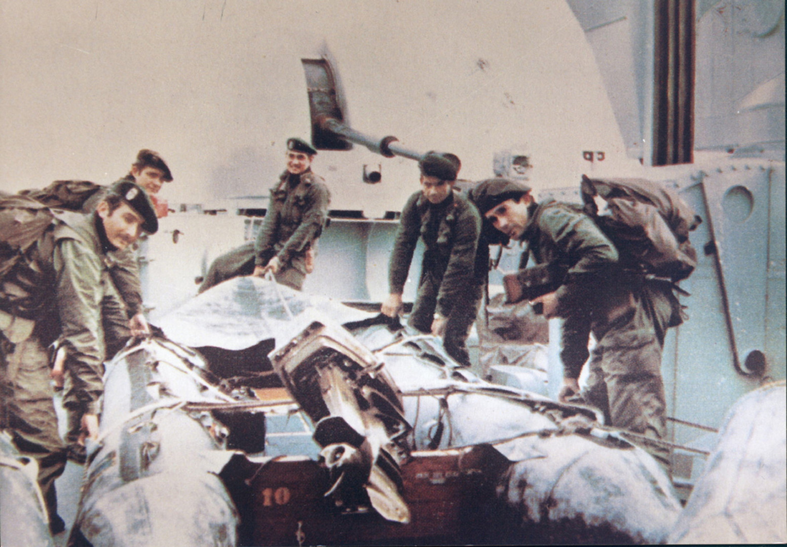
El sigilo del despliegue anfibio
La discreción de la aproximación argentina se esfumó la tarde del 1° de abril cuando un aeroplano civil isleño alertó a los defensores sobre el inminente avance patriota. Anticipando el asalto en ciernes, las tropas locales se abroquelaron de inmediato en los puntos neurálgicos de Puerto Argentino.
Con la espesa caída de la noche austral, el destructor ARA "Santísima Trinidad" se escurrió discretamente cerca de Playa Verde. Desde su cubierta se descolgaron veloces grupos de comandos navales a bordo de kayak y botes de asalto. Promediando las 22:45 horas de ese histórico 1° de abril de 1982, las botas del Cabo Principal IM Carlos Eduardo Cequeira tocaban finalmente el frío suelo malvinero, convirtiéndose en el primer efectivo en hacer cabecera de playa.
Comandos en Acción: La rendición del 2 de Abril
Tras corroborar exhaustivamente la seguridad perimetral de la cabecera, la oleada complementaria de botes encalló silenciosamente antes de la medianoche. El nutrido escuadrón procedió a ramificarse en siete patrullas tácticas esparciéndose a través de la geografía nocturna para rodear sin ser advertidos las dependencias enemigas.
La toma inminente del cuartel de Moody Brook se ejecutó arrojando únicamente insumos disuasivos y de estruendo, revelando que había sido desocupado. En paralelo, un grupo élite al mando del entonces Capitán de Corbeta Pedro Edgardo Giacchino, procedió a rodear la gobernación y forzar la rendición enemiga, resultando trágicamente caído en combate. Así, con las primeras luces del 2 de abril despuntando, las tropas inglesas capitulaban marcando a fuego el comienzo de la gesta.
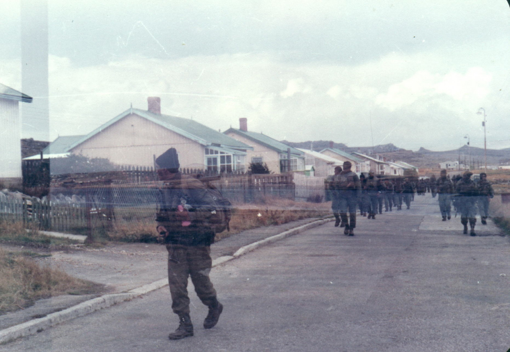
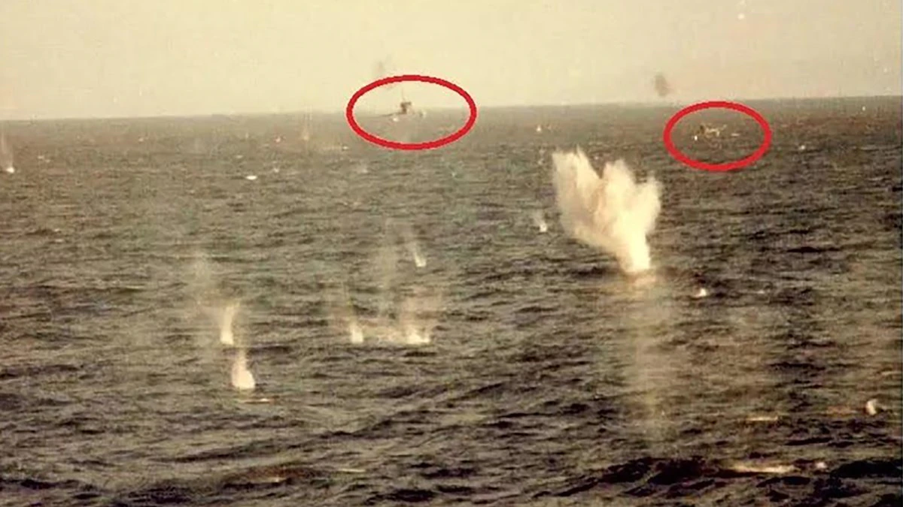
Fuerza Aérea Argentina en acción.
El Bautismo de Fuego: Valor Reconocido Mundialmente
Avanzado el conflicto, la actuación heroica y despiadada de la Fuerza Aérea Argentina y la Aviación Naval escribió páginas que son estudiadas en academias de distintas latitudes, comenzando por el histórico "Bautismo de Fuego" el 1° de mayo de 1982.
A pesar de la notoria desventaja tecnológica frente al equipamiento bélico de la Armada Real británica respaldada por la OTAN, nuestros pilotos lograron asestar golpes durísimos. El vuelo rasante a escasos metros del tempestuoso Atlántico Sur para evadir las alertas de los bucles de radar antiaéreos, permitió hazañas inéditas como el resonante hundimiento del destructor HMS Sheffield y el de la fragata HMS Ardent.
Las audaces correrías sobre la Task Force causaron temores irreparables en el mando inglés, sellando para la posteridad la irrefutable determinación nacional.
Crimen de Guerra: El Hundimiento del ARA General Belgrano
El 2 de mayo de 1982 ocurrió una herida fatídica sin procedentes. El submarino de propulsión nuclear británico HMS Conqueror disparó certeramente sus torpedos sobre el navío, desencadenando la mayor tragedia en los anales de la historia naval argentina y cobrándose la invaluable vida de 323 heroicos tripulantes.
Lo que aconteció seguidamente fue una sobrehumana operación de rescate en la alta mar. A la merced de un cruento temporal con crecientes de ocho metros de altura y un nivel febril de congelamiento, el heroico esfuerzo de los buques escolta permitió rescatar con vida a más de 700 sobrevivientes esparcidos en balsas anaranjadas a la deriva.
El episodio es un crimen de guerra. El Belgrano navegaba a la hora del ataque con un rumbo diametralmente opuesto (hacia el Oeste, en dirección al continente), ajeno por completo a su polémica Zona de Exclusión impuesta, alejándose del conflicto para siempre.
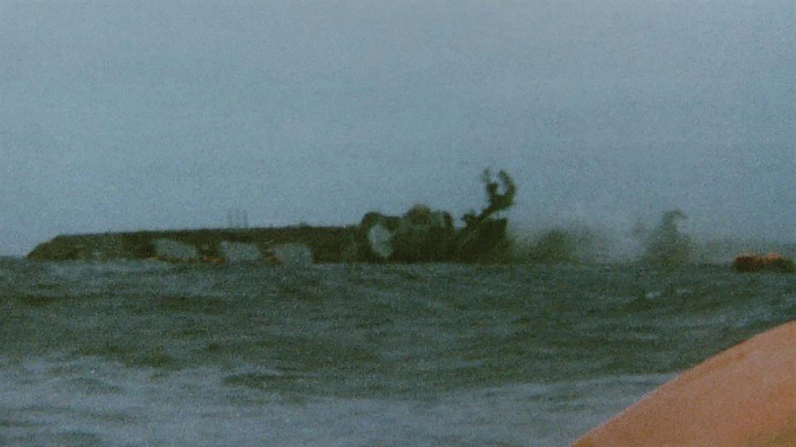

Algunas de las mujeres veteranas. (Fotografía: Prensa Pamela Verasay).
El Rol Invaluable y Silenciado de la Mujer
Durante la Gesta de 1982, la atención médica de alta complejidad y el vital apoyo logístico en maniobras de alto porte contaron con la participación enaltecedora de mujeres excepcionales y profesionales cuyas cicatrices personales e historias quedaron apartadas de la narrativa durante abultadas décadas.
Valientemente a bordo del enorme buque hospital ARA "Almirante Irízar" operaron instrumentadoras destacadas del Ejército Argentino como Silvia Barrera y Susana Mazza. En forma de simultáneo, desde las trincheras invisibles de la Marina Mercante surcaron bravas mares mujeres como Mariana Soneira o la enfermera Doris West bajo riesgo inminente en navíos de asalto como el ARA "Bahía San Blas".
Muchas aguardaron silenciosamente 30 años en total ostracismo hasta obtener en el seno del Estado el merecido estamento de Veteranas de Guerra. Del mismo modo lo hicieron las estoicas enfermeras operando a contrarreloj destrozadas por la precariedad de los centros hospitalarios de evacuación patagónicos, recibiendo el trauma más cruento desde las entrañas abstractas del aire.

Enfermeras del hospital reubicable de Comodoro Rivadavia.

Heroínas a bordo del ARA "Almirante Irízar".

Destacado labor en la Marina Mercante.
Un Soldado Solo Conocido por Dios: La recuperación de la Identidad
Sumando a los decesos marítimos y aéreos irremediables, el conflicto bélico depositó los restos mortales de cientos de soldados de la patria que perecieron defendiendo nuestras islas irrenunciables. Una importante proporción fue sepultada precipitadamente en cementerios como el de Darwin, yaciendo sin el derecho a la individualidad durante una asombrosa brecha de tres décadas dictados temporalmente por la placa "Soldado Argentino Solo Conocido por Dios".
Es recién a lo largo del año 2016 que se acordó y procedió el reconocimiento individual de docenas y docenas de perfiles genéticos mediante la Cruz Roja, acercando la serenidad final a una larga lista de madres y familias enteras que lucharon incansablemente para ver finalmente rubricados sus apellidos en mármoles limpios y cruces adornadas.
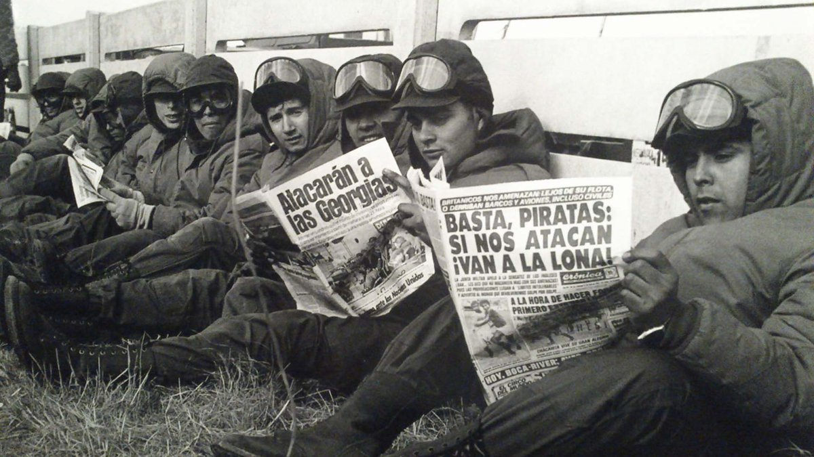
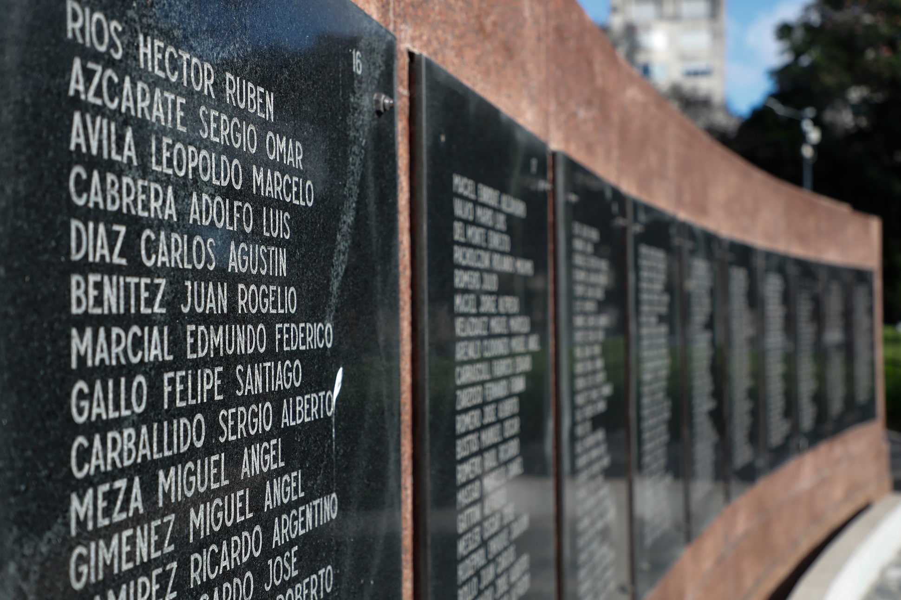
14 de Junio: Fin de la Guerra y Desidia de Posguerra
El lunes 14 de junio de 1982 la Argentina se rindió formalmente y así finalizó la Guerra de Malvinas, que había empezado 74 días antes, el 2 de abril. Unos 649 argentinos fallecieron durante la guerra, dando su vida por la Patria.
Hay otro hecho escalofriante: se estima decenas de veteranos que se quitaron la vida en los últimos años, aunque no hay datos oficiales concretos sobre el tema. Esto se debe al mal trato que han recibido por parte de los sucesivos gobiernos nacionales y las paupérrimas condiciones económicas, sociales y de contención que se les han dado a lo largo de los años.
Memoria Viva y Reclamo Irrenunciable
Cada 2 de abril recordamos y reconocemos el sacrificio, el coraje y el compromiso de los veteranos que dieron su vida por la patria. Su legado perdura en la memoria colectiva de nuestro país.
En el marco de los 44 años del conflicto del Atlántico Sur, ratificamos el reclamo por el ejercicio de la plena soberanía argentina sobre las Islas Malvinas, Georgias del Sur, Sandwich del Sur y los espacios marítimos correspondientes.
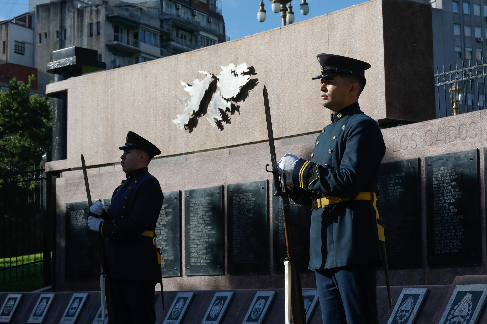